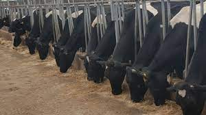

Find quality milk for processing
and for domestic consumption.
This are quality products that encourage healthy living from a click of a button. The products
are from well maintained cattles that are healthy.
we picked the name of this farm because we had a favourite hollywood character.

our cows page
these are some of the breeds available in our farm. they all live in a burn where they are zero grazed. once in a while they live the burn to walk
around the farm.
Our animal feeds
Our cattle, eat healthily. They always feed in a zero grazed environent and occational pastures
OUR PRODUCTS PAGE
There are some products that are produced in the farm. the list below is some of them
Our products are safe
the animals andergo regular checkups by professionals.
the picture on the left shows one of the events where the
cow was being examined by a vet.
Farm Tour
These are some of the facilities in the land. they enable us give our animals the best care.